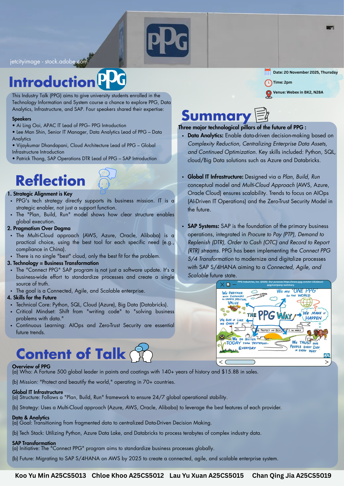

Assignment 2 - Poster of PPG
Reflection:
For assignment 2, we attended an industrial talk by four speakers. This industrial talk allowed me to gain a deeper understanding of PPG, data analytics, global IT infrastructure, and SAP. I also learned about the three major technological pillars for the future development of PPG. For improvement, I would suggest that the talk could include more information on career opportunities and required skills to help us prepare for future employment.